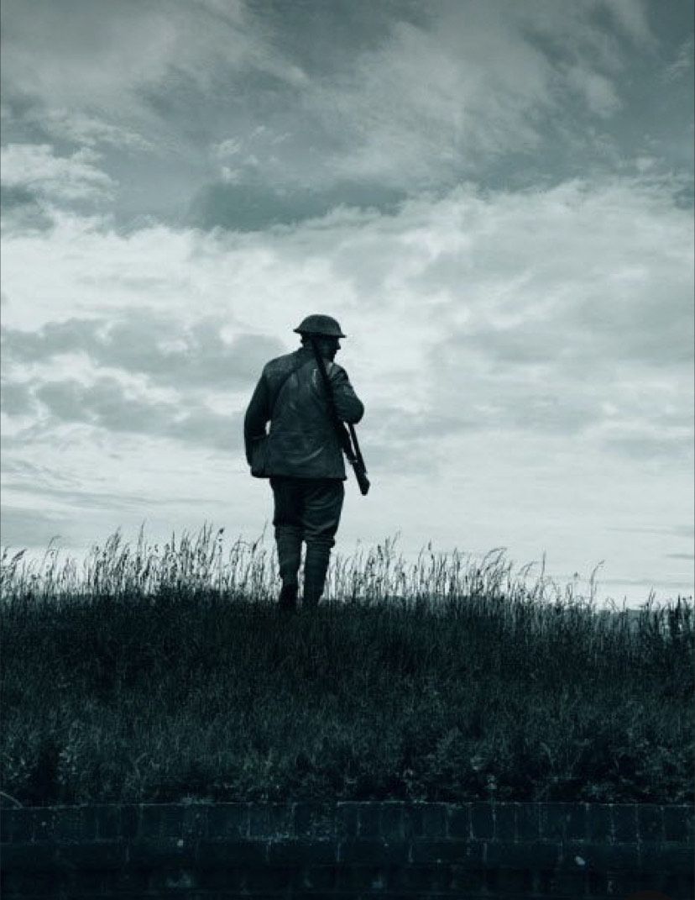

One Man Army
Let me tell you about this one man army who bravely infiltrated a Boko Haram hideout in Sambisa and saved the hostages. Meet Ahmed, a fearless and highly skilled individual with a heart full of courage. He had heard of the atrocities committed by Boko Haram and couldn't bear to see innocent lives suffer. Determined to make a difference, he embarked on a daring mission to rescue the hostages held captive by the terrorist group. Ahmed spent months gathering intelligence, meticulously planning every step of his operation. He studied the layout of the hideout, memorized the guards' schedules, and prepared himself mentally and physically for the challenges ahead. Under the cover of darkness, Ahmed stealthily made his way through the dense forests of Sambisa. With his exceptional combat skills and strategic thinking, he managed to evade the watchful eyes of the enemy and slip into the heart of their stronghold. As he moved deeper into the hideout, Ahmed discovered the hostages, their spirits broken and hope fading. With a calm determination, he reassured them that help had arrived and urged them to stay strong. Using his extensive knowledge of hand-to-hand combat and his quick reflexes, Ahmed engaged the enemy forces in intense battles. He fought with unwavering resolve, taking down one enemy after another, never losing sight of his mission to save the innocent lives trapped in this nightmare. The hostages, witnessing Ahmed's bravery and unwavering determination, found renewed hope and strength. They followed his lead, trusting in his ability to lead them to safety. Ahmed's relentless pursuit of justice and his selfless acts of heroism inspired others within the hideout to rise against their captors. Together, they formed an unexpected alliance, fighting side by side to overcome the evil that had plagued their lives for far too long. After hours of intense combat, Ahmed and the hostages emerged victorious. The hideout, once a symbol of terror, now stood as a testament to their resilience and the triumph of good over evil. Ahmed's heroic actions not only saved the lives of the hostages but also sent a powerful message to Boko Haram and the world - that the spirit of courage and unity can overcome even the darkest of forces. His story serves as a reminder that there are individuals out there who are willing to risk everything to protect the innocent and bring hope to those in need. Ahmed, the one man army, will forever be remembered as a true hero.

One Man Army
War · 5 years ago